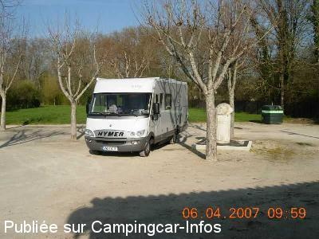

ASN = Aire de services avec stationnement nuit possible de :
AIGRE
(N° 128)
Accès/adresse :
Rue des Charriéres
16140 AIGRE
16140 AIGRE
Latitude : (Nord) 45.89333° Décimaux ou 45° 53′ 35′′
Longitude : (Est) 0.00583° Décimaux ou 0° 0′ 20′′
Tarif : 2015
Stationnement, services : 4 €
Paiement à l'Office du Tourisme
Type de borne : Autre
Services :


Tous commerces
Autres informations :
Ouvert du 01/04 au 31/10
5 emplacements
Tel : +33(0)545 212 670
http://www.ville-aigre.fr/venir-%C3%A0-aigre/h%C3%A9bergement-restauration/

Le 06/02/2008 par DIDI 31
de
Ferré
le 12/06/2010 :
Ce soir là, vin d'honneur pour un mariage, des voitures partout, nous étions trois CC, aucun autre n'a pu stationner après 17 h et ce jusqu'à 20 h, nous n'avons pas vu la personne de l'OT pour régler. A part ça, aire calme et propre mais nous n'avons pas pu avoir l'électricité
Ce soir là, vin d'honneur pour un mariage, des voitures partout, nous étions trois CC, aucun autre n'a pu stationner après 17 h et ce jusqu'à 20 h, nous n'avons pas vu la personne de l'OT pour régler. A part ça, aire calme et propre mais nous n'avons pas pu avoir l'électricité